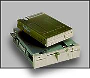
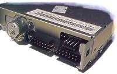

| Привод флоппи-диска (FDD — Floppy Disk Drive) или дисковод используется для архивирования и хранения небольших объемов данных, а также для переноса их с одного компьютера на другой. |  |
Привод диска 5,25" (133 мм) появился в 1976 г. и использовался с первых IBM PC. Привод диска 3,5" (89 мм) разработан фирмой Sony в 1980 г. С 1987 г. IBM использует этот привод в компьютерах PS/2.
|
|
|
Дисковод, как и жесткий диск, имеет два двигателя: 1— обеспечивает стабильную скорость вращения дискеты, 2 — шаговый, перемещает головки чтения-записи. Скорость вращения дискеты зависит от ее типа — 300...360 об/мин. Головки, в отличие от жесткого диска, контактируют с поверхностью флоппи-диска.
Работой
всех узлов привода управляет контроллер: включает и выключает вращение
диска, управляет головками, проверяет переключатель запрета записи и т.п.
| Стандартный интерфейс привода — SA-400, разработанный в начале 70-х. Контроллер соединен с приводом 34-контактным кабелем. Для подключения питания используется стандартный 4-контактный разъем. |  |